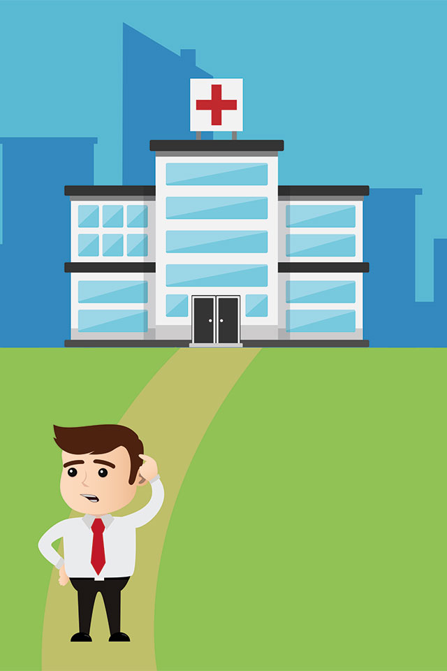
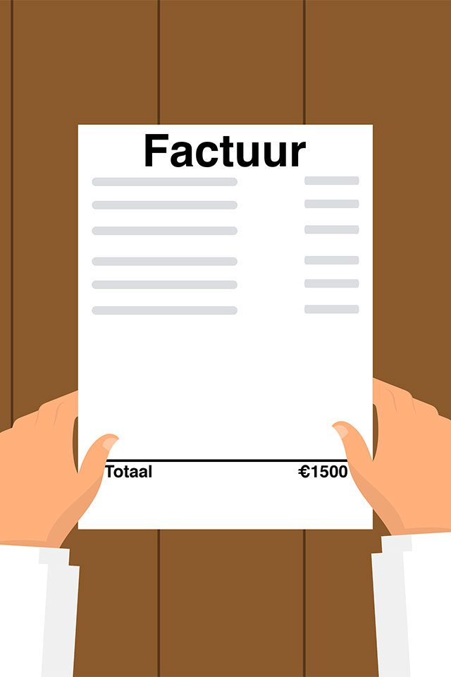
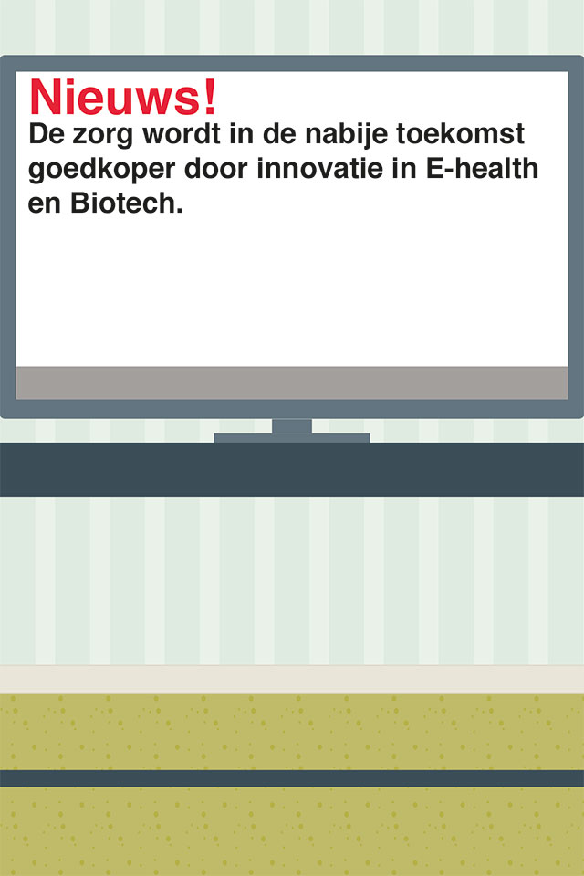
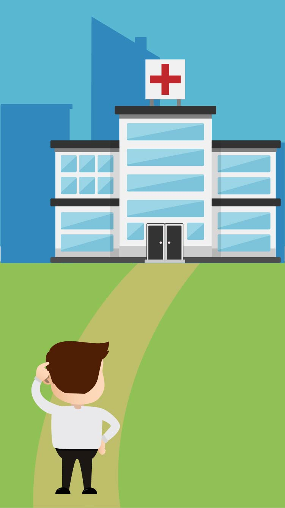
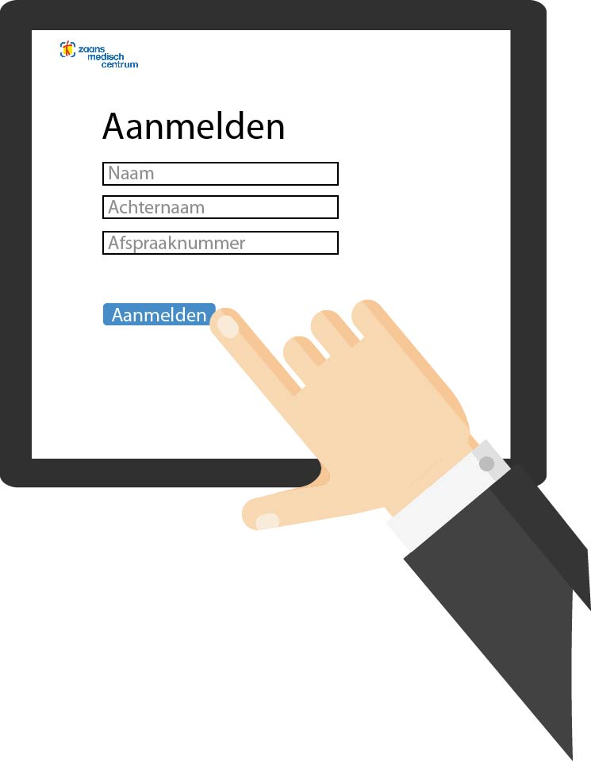

Bart is een man van 54, hij is vaak ziek en heeft lichaamsklachten. Hierdoor moet hij vaker naar de dokter/arts dan de meeste mensen.

Bart zit op de bank met een rekening in zijn hand, hij kijkt zorgelijk. “Er komt een moment dat ik dit niet meer moet betalen”.

Over een paar maanden worden alle Huisartspraktijken en ziekenhuizen vervangen door eHealth. eHealth gaat over digitale toepassingen in de zorg.
6 Maanden
Later

Bart komt het ziekenhuis binnen en ziet dat veel geautomatiseerd zijn.

Bart meld zich aan via een scherm en krijgt vervolgens een melding dat er banen zijn gezocht.

Hij komt op een site waar 3 beroepen staan die wel blijven bestaan. Klik op 1 van de icoontjes om meer over dat beroep te weten te komen.
↑